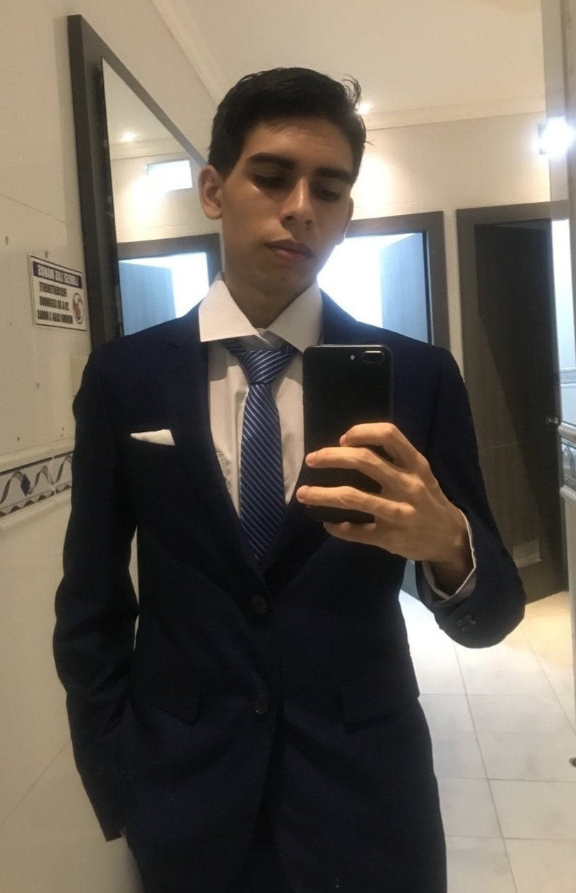

25 Años · Estudiante de Desarrollo de Software

Estudiante de Desarrollo de Software con interés en programación, desarrollo de videojuegos y creación de soluciones eficientes. Enfocado en aprendizaje continuo, resolución de problemas y buenas prácticas para construir proyectos funcionales y escalables.